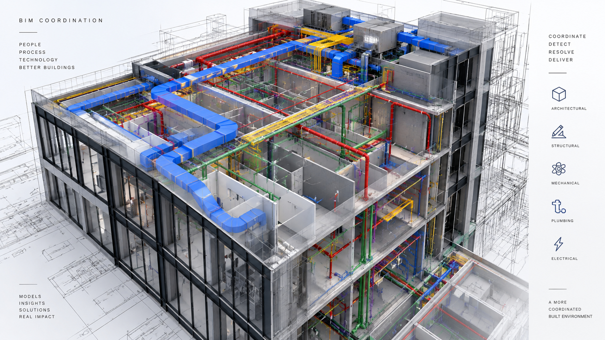
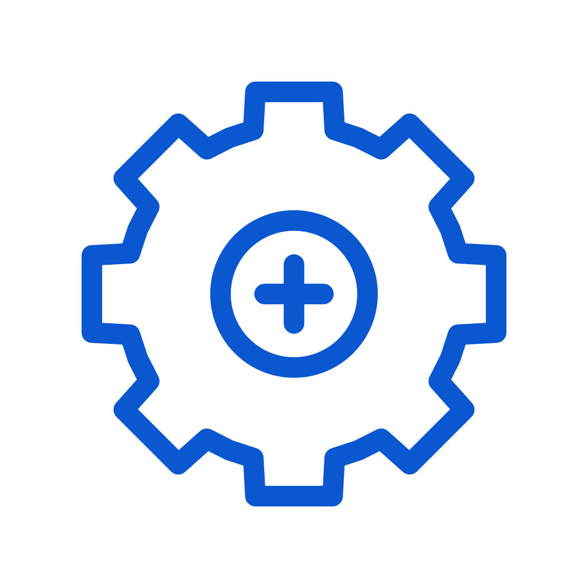
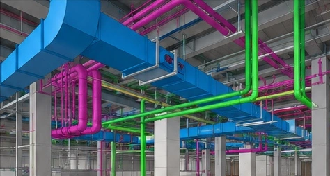

Multidisciplinary coordination
I bring Revit models together in Navisworks to review how ducts, pipes and structure share space. When a clash needs a design decision, I work with the disciplines involved to resolve it.
Projects / BIM Coordination
I bring architecture, structure and building systems into one model so teams can see where designs conflict and agree on a buildable solution.


Core expertise
I bring Revit models together in Navisworks to review how ducts, pipes and structure share space. When a clash needs a design decision, I work with the disciplines involved to resolve it.
I set up templates, worksets, naming conventions and sheet standards so teams can exchange models consistently and trace changes across disciplines.
I track issues through model reviews, check revisions against the agreed solution and prepare coordinated drawings that field teams can use.

Selected experience
My work on federal infrastructure and the Parliament Hill Centre Block rehabilitation calls for careful handling of project information. I can coordinate across disciplines within controlled-access workflows, document decisions and share updates through approved project channels.
Explore my Centre Block experience →